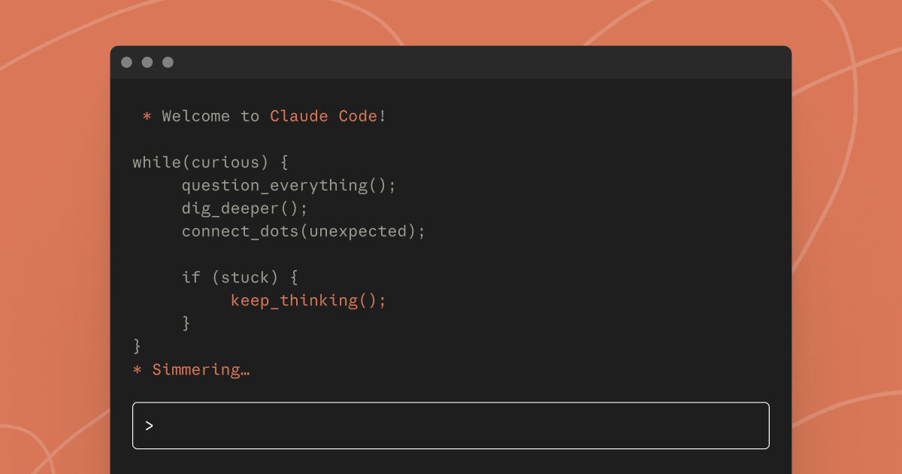

Discussion 2: Building and Benchmarking Coding Agents#
Duration: 3 hours Format: Hands-on workshop
In this workshop, we’ll build a complete coding assistant from first principles, then benchmark how context management improves agent performance. You’ll progress from basic ReAct loops to a functional “FlawedCode” assistant, then learn to systematically measure agent quality.
Learning Objectives#
By the end of this session, you will be able to:
Understand the ReAct pattern that powers all modern AI agents
Build agents progressively from raw loops to framework-based implementations
Implement tool use for file operations and code execution
Recognize context limitations in multi-turn agent conversations
Design benchmarks that measure agent capabilities objectively
Compare agent versions using systematic evaluation
What You’ll Build#
A FlawedCode assistant (minimal Claude Code clone) that can:
Read and write files in a project
Execute Python code safely
Navigate and search codebases
Remember conversation context
Demonstrate both capabilities and limitations

Claude Code - the production assistant we’re building toward. Source: Anthropic
Prerequisites#
Python 3.10+
OpenRouter API key (get one here)
ChartBook installed (we’ll set this up in class)
Familiarity with LangChain basics (helpful but not required)
Session Outline#
Hour 1: Agent Walkthrough & Building “FlawedCode” (60 min)#
Progressive tour through agent examples, culminating in a working coding assistant.
Hour 2: ChartBook Setup and Exploration (60 min)#
Install and explore ChartBook for real financial data integration.
Hour 3: Context Management & Benchmarking (60 min)#
Understand context limitations and build systematic agent evaluations.
Course Materials#
Additional Resources#
Documentation#
Repositories#
In-Class Examples - agents/ directory
Papers#
ReAct: Synergizing Reasoning and Acting - Yao et al.
SWE-bench: Agent Evaluation - Jimenez et al.
Project Extensions#
After completing the base workshop, consider extending your implementation:
Context Offloading - Save large tool results to disk
Conversation Summarization - Compress context at threshold
ChartBook Integration - Add financial data tools
Custom Benchmarks - Design finance-specific evaluation tasks
Model Comparison - Compare cheap vs expensive models
Assessment#
Students should be able to:
Explain the ReAct agent pattern
Build a working FlawedCode v1 assistant
Identify context limitations in multi-turn conversations
Design at least 3 benchmark tasks with success criteria
Discuss tradeoffs in context management strategies
Ready to get started? Begin with Agent Fundamentals!